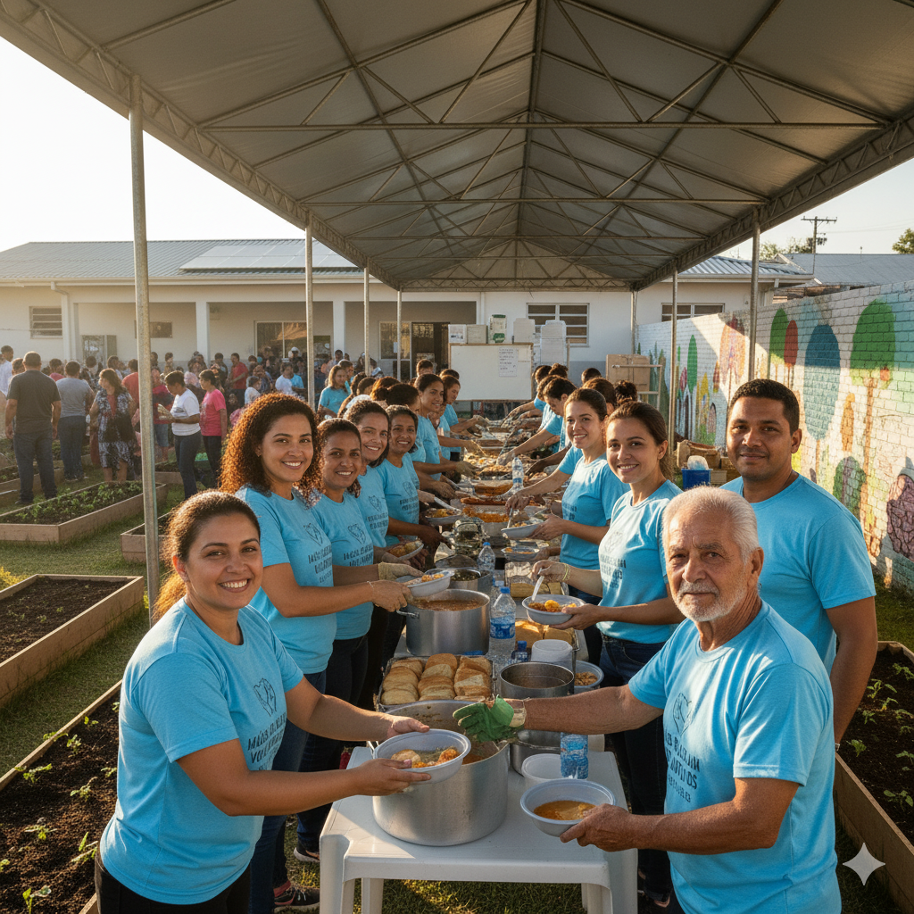

Nossas Ações em Imagens

Distribuição de Alimentos

Apoio Educacional

Eventos de Integração
Somos uma organização dedicada à inclusão social e ao atendimento de famílias. Junte-se a nós e faça a diferença!
Quero Ser VoluntárioSomos a ONG Mundo Melhor, uma organização da sociedade civil sem fins lucrativos apaixonada e dedicada à transformação social. Nossa missão é atuar ativamente no atendimento e apoio a famílias em situação de vulnerabilidade e exclusão social, buscando não apenas suprir necessidades imediatas, mas, principalmente, promover dignidade, esperança e oportunidades de longo prazo para quem mais precisa.
Nossa atuação é guiada por princípios sólidos que visam a construção de uma sociedade mais justa e igualitária. Trabalhamos com Solidariedade, Transparência, Respeito e Empoderamento, focando no desenvolvimento de habilidades e na capacidade de superação das famílias. Nossa visão é ser uma referência nacional em desenvolvimento humano e comunitário.
Com dedicação, buscamos construir um Mundo Melhor onde todas as pessoas tenham a chance de prosperar.